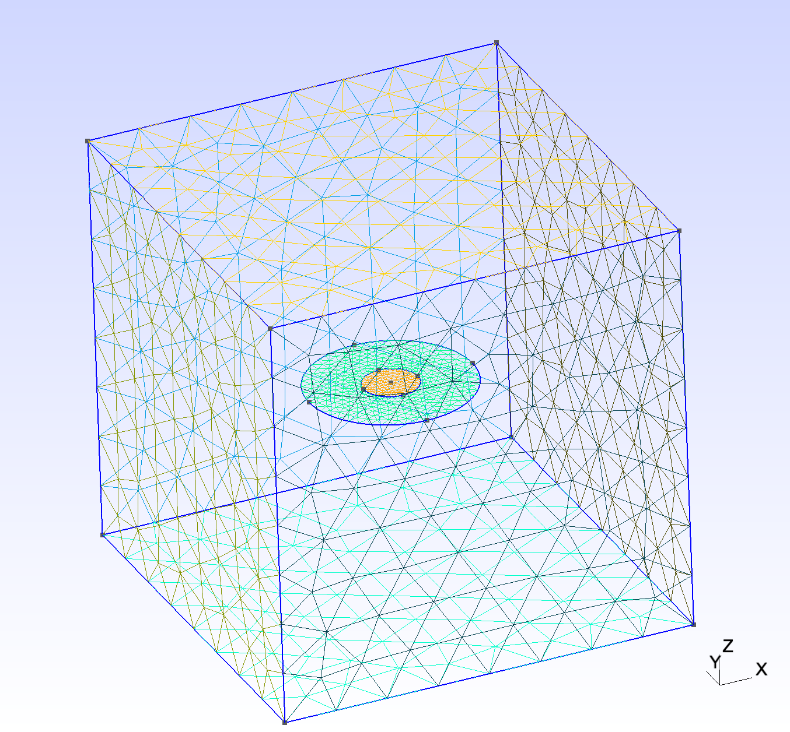
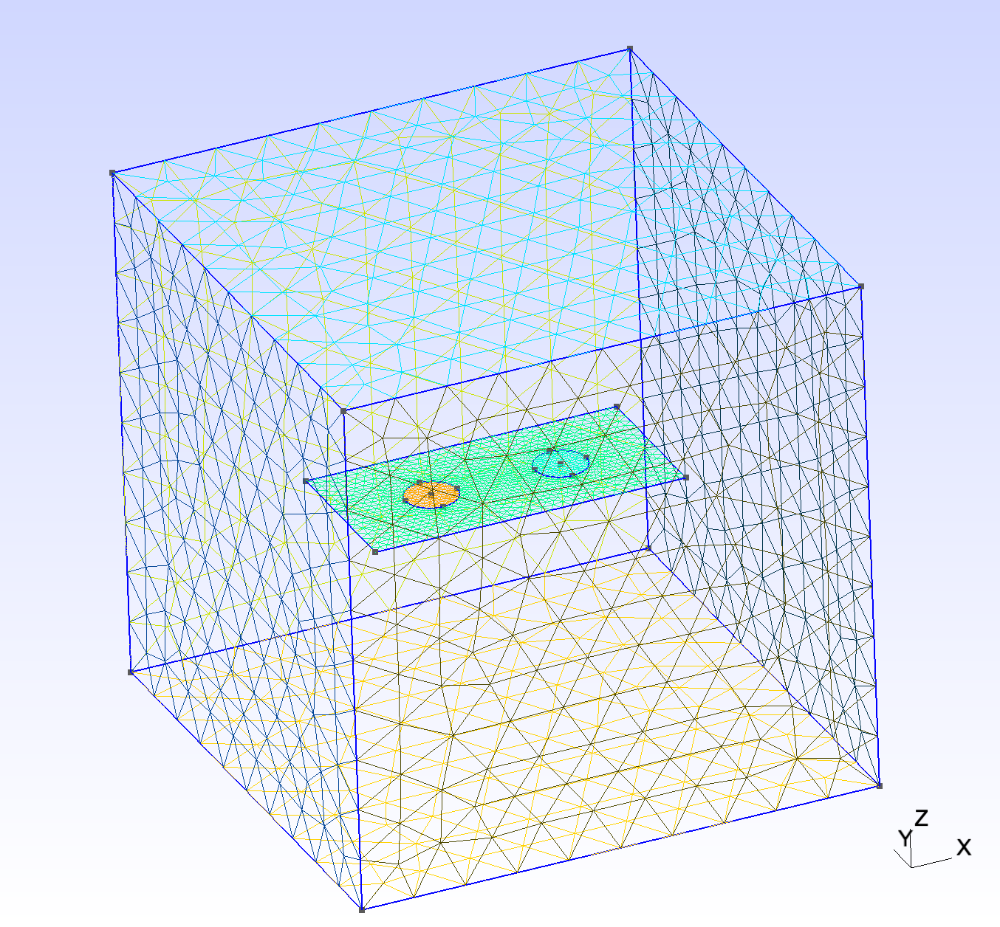
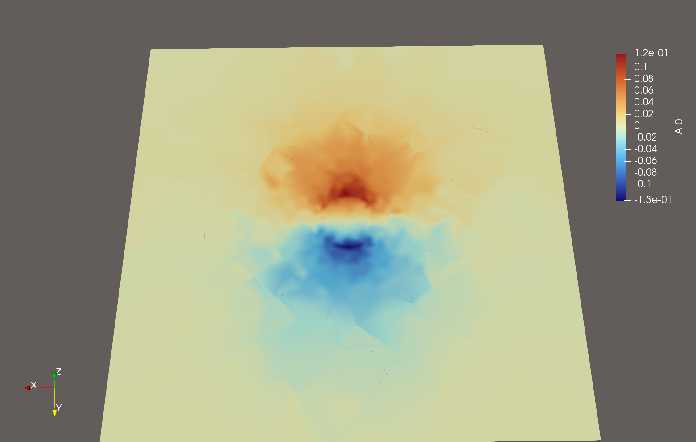
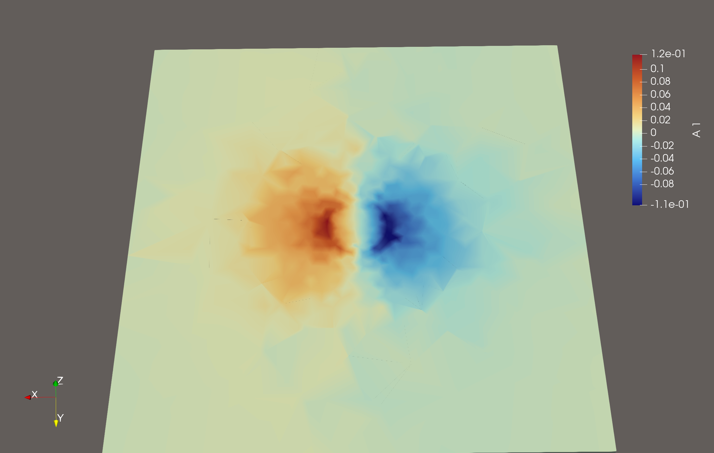
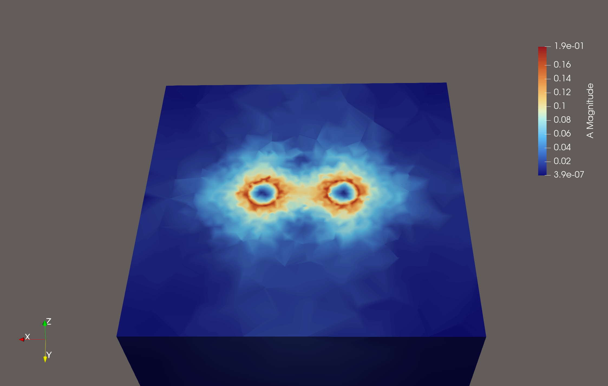
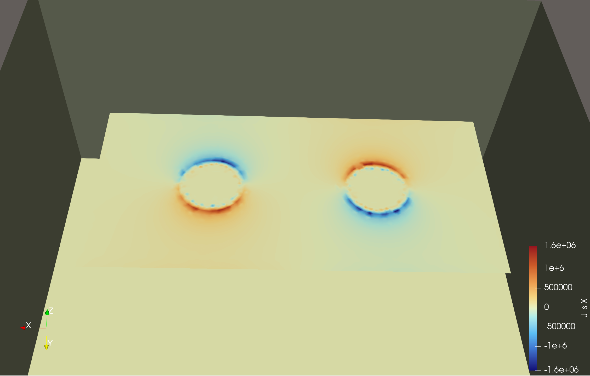
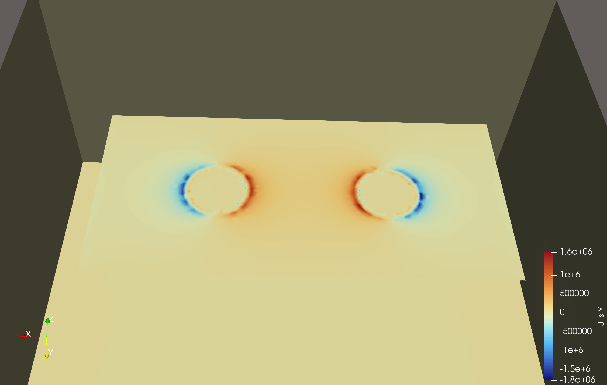

Flux Trapping and Kinetic Inductance
Problem description
This example demonstrates Palace's flux boundary conditions for the magnetostatic analysis of thin-film superconducting structures with holes. Fixed amounts of magnetic flux are prescribed through the holes, and the solver extracts the resulting field distribution together with the loop inductance matrix — including the kinetic contribution of a finite-penetration-depth London film.
Flux is imposed as an integral (fluxoid) constraint on each hole perimeter,
\[\oint_h \mathbf{A} \cdot d\boldsymbol{\ell} = \Phi,\]
where $\mathbf{A}$ is the magnetic vector potential and $\Phi$ the prescribed flux through hole $h$. For each hole a curl-free cohomology generator $\mathbf{a}_h$ with loop circulation $\Phi$ is constructed on the 3D mesh (a discrete gradient with a $\Phi$-jump across a cut surface spanning the hole). The magnetostatic system is then solved with the loop integral imposed as a single scalar constraint via a range-space (two-solve) method, so the fluxoid $\oint_h \mathbf{A}\cdot d\boldsymbol{\ell} = \Phi$ holds exactly, gauge-invariantly, and independently of the mesh partition. Only the loop integral is pinned, so the shielding currents remain free to redistribute near the hole.
Whether a film screens perfectly or penetrates is set by how its attribute is declared:
Perfect conductor ($\lambda \to 0$). A film attribute listed under
"FilmAttributes"only is treated as a perfect screen: the flux-expulsion condition $\mathbf{B}\cdot\mathbf{n} = 0$ holds together with the fluxoid, and the extracted inductance is purely geometric.London film (finite $\lambda$). A film attribute listed also under
"Superconductor"carries the shifted London sheet penalty\[\tfrac{1}{2}\int_\Sigma \frac{1}{L_{\mathrm{ksq}}}\,\lvert \mathbf{A}_t - \mathbf{a}_h\rvert^2\,dS, \qquad L_{\mathrm{ksq}} = \frac{\mu_0 \lambda^2}{d},\]
where $\lambda$ (
"PenetrationDepth") is the penetration depth and $d$ ("Thickness") the film thickness. The film interior $\mathbf{A}_t$ is then a free unknown: the field penetrates over $\sim\lambda$ and stores additional kinetic energy, so the extracted inductance is the total $L = L_\text{geom} + L_\text{kin}$. As $\lambda \to 0$ the penalty forces $\mathbf{A}_t \to \mathbf{a}_h$ and the perfect-screening (geometric) limit is recovered.
Because a flux loop is enforced through a single scalar fluxoid constraint, each hole must be its own flux loop (one entry in "HoleAttributes"); several holes are modeled as several "FluxLoop" excitations, from which the full self/mutual inductance matrix — and any signed combination of hole fluxes — follows.
Four configurations are provided in the examples/circular_hole/ directory:
- Square washer (
square_hole.json): a perfect-conductor washer, validated against the analytic Ketchen–Jaycox formula. - Single hole (
circular_hole.json): a circular London film with a concentric hole, swept over the penetration depth $\lambda$. - Two holes, shared plate (
double_circular_hole_multi_flux.json): two holes on one London film, each an independent flux loop. - Two holes, separate plates (
double_circular_hole_multi_planes.json): two spatially separated London films, each with one hole.
All configurations use a mesh length unit of $\mu\text{m}$.
Configuration
Each configuration uses "Problem": {"Type": "Magnetostatic"} and specifies flux loop boundaries via the "FluxLoop" keyword. The shared solver settings are:
"Solver":
{
"Order": 2,
"Device": "CPU",
"Magnetostatic":
{
"Save": 2
},
"Linear":
{
"Type": "AMS",
"KSPType": "CG",
"Tol": 1.0e-8,
"MaxIts": 200
}
}The AMS (Auxiliary-space Maxwell Solver) preconditioner with CG iteration is well-suited for the symmetric positive-definite curl-curl system arising in magnetostatics.
Mesh
The meshes are generated using Julia scripts with the Gmsh package, located in the mesh/ subdirectory. For example, the two-hole rectangular plate mesh can be generated with:
julia -e 'include("mesh/sheet_w_two_holes.jl"); generate_sheet_with_two_holes_mesh()'The figures below show the geometries. From left to right: the single circular hole on a circular plate, the rectangular plate with two holes, and the two spatially separated square plates each containing a hole:



Square washer
The square_hole.json configuration provides a check against a known closed-form result. It models a square washer with a central square hole of side $d = 2\,\mu\text{m}$ and border width $W = 6\,\mu\text{m}$ (mesh/square_hole.msh, generated by mesh/square_hole_mesh.jl). The film attribute is listed under "FilmAttributes" but not under "Superconductor", so it is solved in the perfect-screening ($\lambda\to0$) limit:
"FluxLoop":
[
{
"Index": 1,
"FilmAttributes": [8],
"HoleAttributes": [9],
"FluxAmounts": [1.0],
"Direction": "+Z"
}
]For a square washer in the large-border limit, the Ketchen–Jaycox thin-film formula [1] gives the loop inductance
\[L \approx 1.25\,\mu_0 d \,,\]
which evaluates to $L \approx 3.14\,\text{pH}$ for $d = 2\,\mu\text{m}$. Palace extracts $L \approx 3.01\,\text{pH}$ (coefficient $L/(\mu_0 d) \approx 1.20$), converging upward under mesh refinement toward $\approx 3.04\,\text{pH}$. The residual difference from $1.25$ is within the literature spread of the Ketchen coefficient.
Single hole — penetration-depth sweep
The circular_hole.json configuration models a circular film of radius $R = 3\,\mu\text{m}$ with a concentric hole of radius $r = 1\,\mu\text{m}$, now declared a London film. A unit nondimensional flux-loop amplitude is prescribed through the hole:
"Superconductor":
[
{
"Attributes": [8],
"PenetrationDepth": 0.4,
"Thickness": 0.1
}
],
"FluxLoop":
[
{
"Index": 1,
"FilmAttributes": [8],
"HoleAttributes": [9],
"FluxAmounts": [1.0],
"Direction": "+Z"
}
]The fields have the following meaning:
"FilmAttributes": boundary attributes of the metal film carrying the flux loop."HoleAttributes": boundary attribute of the hole perimeter where the integral constraint is applied (exactly one per flux loop)."FluxAmounts": prescribed nondimensional flux-loop amplitude through the hole."Direction": surface normal direction for flux orientation."Superconductor": the same film attribute, with penetration depth $\lambda$ and thickness $d$ (both in $\mu\text{m}$) setting the sheet inductance $L_{\mathrm{ksq}} = \mu_0\lambda^2/d$.
Sweeping $\lambda$ at fixed $d = 0.1\,\mu\text{m}$ shows the kinetic inductance adding to the geometric baseline as the film penetration grows, and the $\lambda\to0$ value reproducing the perfect-conductor limit:
| $\lambda$ (μm) | $L_{\mathrm{ksq}} = \lambda^2/d$ | $L$ (pH) |
|---|---|---|
| $0$ (PEC) | $0$ | $2.853$ |
| $0.1$ | $0.1$ | $3.288$ |
| $0.2$ | $0.4$ | $4.017$ |
| $0.4$ | $1.6$ | $5.157$ |
At $\lambda = 0.4\,\mu\text{m}$ the self-inductance is $L = 5.157\,\text{pH}$, of which $2.853\,\text{pH}$ is geometric and $\approx 2.30\,\text{pH}$ kinetic. The geometric value corresponds to a stored magnetic energy of $E = \Phi_0^2/(2L)$ for one flux quantum $\Phi_0 = 2.0678\times10^{-15}\,\text{Wb}$ trapped in the hole.
The figures below show the magnetic vector potential amplitude $|\mathbf{A}|$, its in-plane components $A_x$ and $A_y$, the out-of-plane magnetic field $B_z$, and the surface current components $J_x$ and $J_y$ on the film:





As a verification step, we compute the flux threading the hole by evaluating the surface integral $\int_h \mathbf{B} \cdot d\mathbf{S}$ over the hole area. The computed flux agrees with the prescribed value to high accuracy:

Two holes on a shared plate
The double_circular_hole_multi_flux.json configuration places two holes on a single London film, each treated as an independent flux loop:
"Superconductor":
[
{
"Attributes": [8],
"PenetrationDepth": 0.4,
"Thickness": 0.1
}
],
"FluxLoop":
[
{
"Index": 1,
"FilmAttributes": [8],
"HoleAttributes": [9],
"FluxAmounts": [1.0],
"Direction": [0.0, 0.0, 1.0]
},
{
"Index": 2,
"FilmAttributes": [8],
"HoleAttributes": [10],
"FluxAmounts": [1.0],
"Direction": [0.0, 0.0, 1.0]
}
]Note that "Direction" accepts either a string shorthand ("+Z") or an explicit numeric array ([0.0, 0.0, 1.0]). With two independent excitations the solver computes the full inductance matrix from the stored magnetic energy,
\[R_{ij} = \frac{2E_{ij}}{\Phi_i \Phi_j}, \qquad M = R^{-1},\]
where $2E_{ij}$ is the cross magnetic energy of flux states $i$ and $j$ (the curl energy together with the kinetic sheet contribution for the London film), $R$ is the reluctance matrix, and $M$ is the inductance matrix written to terminal-M.csv. The diagonal entries $M_{ii}$ are the self-inductances; the off-diagonal $M_{ij}$ ($i \neq j$) is the mutual inductance. For $\lambda = 0.4\,\mu\text{m}$, $d = 0.1\,\mu\text{m}$ the computed matrix is
\[M = \begin{pmatrix} 4.510 & -0.136 \\ -0.136 & 4.500 \end{pmatrix} \text{pH}\]
The near-equal self-inductances reflect the geometric symmetry of the two holes, each raised above its $\approx 2.85\,\text{pH}$ PEC value by the kinetic contribution of the penetrating film. The mutual inductance is small and negative — about 3% of the self-inductance — so the two holes on the shared film are weakly coupled: flux forced through one hole only modestly influences the shielding currents around the other at this separation. The energy of the antisymmetric ($+1/-1$ vortex–antivortex) state follows from this matrix as $M_{11}+M_{22}-2M_{12} \approx 9.28\,\text{pH}$.
The figures below show the same field quantities for the two-hole geometry with unit flux through each hole:





Again, the computed flux through each hole matches the prescribed values:

Two holes on separate plates
The double_circular_hole_multi_planes.json configuration places each hole on its own spatially separated London film, each with a distinct "FilmAttributes" attribute (both films appear in the shared "Superconductor" block):
"Superconductor":
[
{
"Attributes": [8, 10],
"PenetrationDepth": 0.4,
"Thickness": 0.1
}
],
"FluxLoop":
[
{
"Index": 1,
"FilmAttributes": [8],
"HoleAttributes": [9],
"FluxAmounts": [1.0],
"Direction": [0.0, 0.0, 1.0]
},
{
"Index": 2,
"FilmAttributes": [10],
"HoleAttributes": [11],
"FluxAmounts": [1.0],
"Direction": [0.0, 0.0, 1.0]
}
]For $\lambda = 0.4\,\mu\text{m}$, $d = 0.1\,\mu\text{m}$ the inductance matrix is
\[M = \begin{pmatrix} 4.888 & 0.000 \\ 0.000 & 4.872 \end{pmatrix} \text{pH}\]
The self-inductances are equal by the mirror symmetry of the two plates. The mutual inductance is numerically zero ($|M_{12}| \approx 2\times10^{-4}\,\text{pH}$, i.e. $\sim10^{-5}$ of the self-inductance, at the solver-tolerance floor): with the holes on physically separated films the shielding currents around each hole are confined to their own metal and cannot circulate across to the other, and the residual far-field coupling is itself screened, so the two loops are effectively decoupled — in contrast to the shared-plate case above.
References
[1] J. M. Jaycox and M. B. Ketchen, Planar coupling scheme for ultra low noise DC SQUIDs, IEEE Transactions on Magnetics 17 (1981) 400-403.